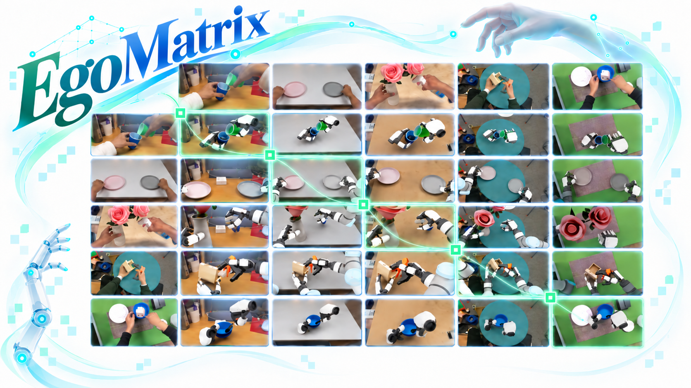
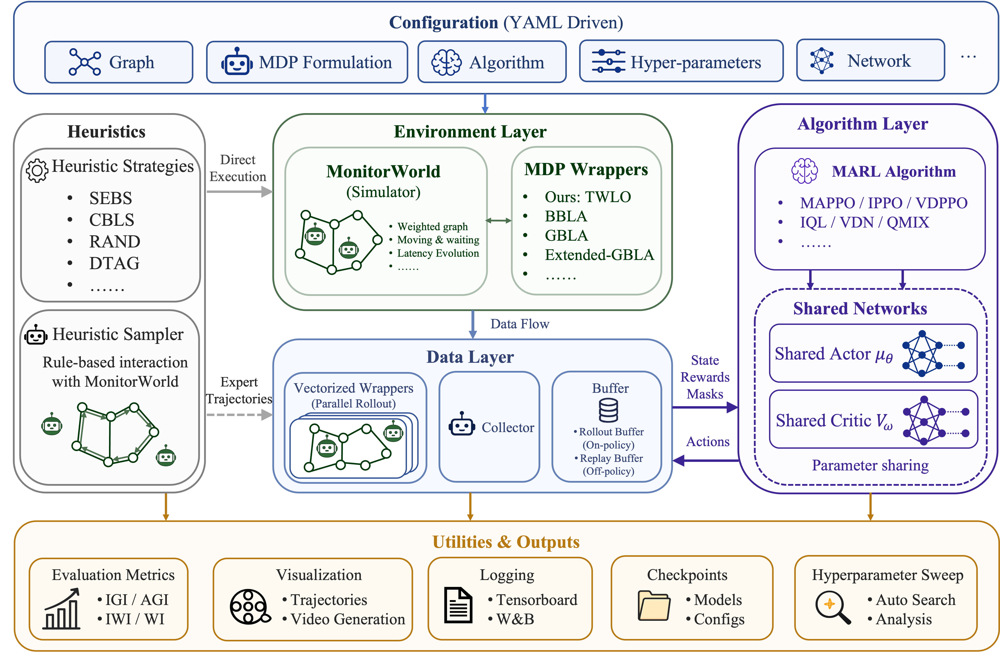
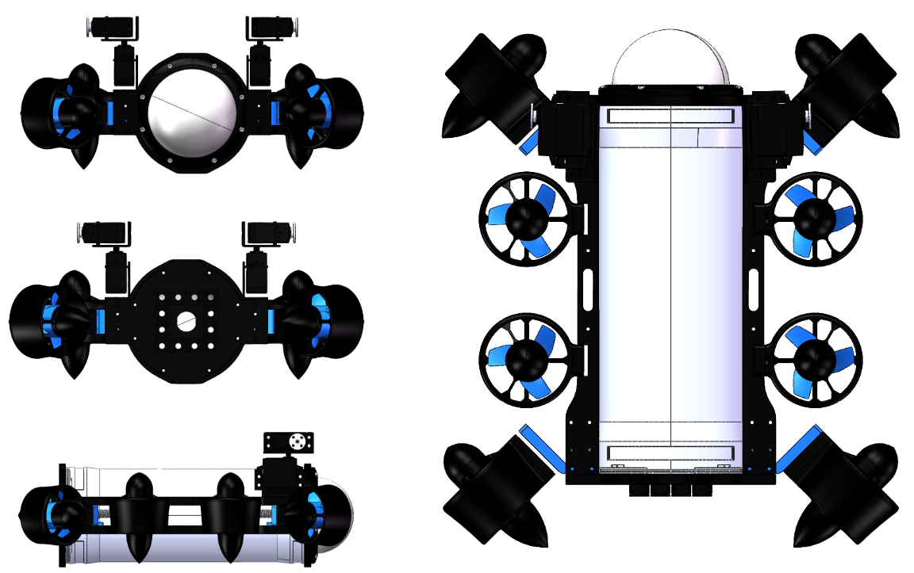

I am a third-year undergraduate majoring in Automation at Shanghai Jiao Tong University. I am fortunate to be advised by Prof. Yao Mu at ScaleLab. Previously, I had the pleasure of working with Prof. Xiaoming Duan and Prof. Jianping He at IWIN-FINS Lab.
My research focuses on robot learning for dexterous manipulation, particularly scalable robot data generation from human demonstrations and cross-embodiment representations for manipulation. I also enjoy building real robotic systems, from low-level control to learning-based decision-making.
News
Research

Open-Source Projects

Selected Honors
- SJTU Junzheng Scholar
50 undergraduates selected university-wide annually.
- Second Prize · AUV Track
China International Marine Underwater Robot Competition · 5th out of 40 teams.
- National Scholarship
Awarded to 0.2% of undergraduates nationwide.
- Second Prize · CUADC National Finals
China University Aircraft Design Competition · Fixed-wing Reconnaissance and Strike · 13th out of 98 teams.
Experience
Shanghai Jiao Tong University
Feb 2025 – Present
Undergraduate in Automation
IWIN-FINS Lab · Shanghai Jiao Tong University
Oct 2024 – Feb 2026
Research Intern · Advisors: Prof. Xiaoming Duan and Prof. Jianping He
Shanghai Jiao Tong University
Sep 2023 – Jan 2025
Undergraduate in Physical Oceanography and Observation Technology